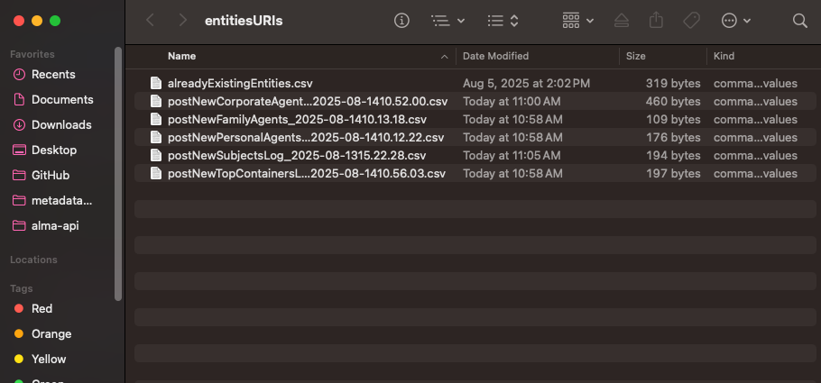

Update archival object template with URIs¶
While there are numerous methods you could use to replace entity names with URIs in the archival-object-template.csv, we have a script available that does this automatically using spreadsheets you already have. To do this method, see the steps below.
Run findAndReplaceStringsWithURIs.py¶
Preparation¶
- Create a new folder somewhere on your computer. In this example, I created a folder called
entitiesURIson my Desktop. - Put all of your log CSV files for agents and subjects in the new folder.
- Find your
alreadyExistingEntities.csvand also add it to the folder. - Put a copy of your archival-object-template in your
helping-scriptsfolder.

Running the script¶
- In your terminal, navigate to your
helping-scriptsfolder. - Run the following command in your terminal, adjusting the filename and directory path to match what you have.
python findAndReplaceStringsWithURIs.py -f archival-object-copy.csv -d /Users/michelle/Desktop/entitiesURIs
Reviewing your results¶
A new spreadsheet beginning with wReplacements_ should have been created in your helping-script folder. This is a copy of your archival-object-template with all names replaced with their URIs. I'd recommend visually scanning the relevant columns (linked_agents, subjects, instances) to make sure no strings or barcodes remain. Once verified, this spreadsheet should be the one used in step 8.